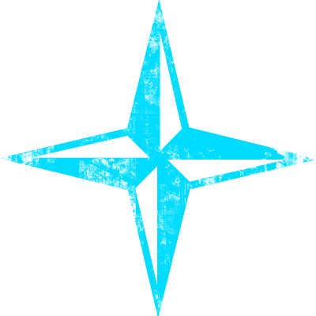

STAR DEFENDER 3!
HOW TO PLAY
Use WASD to translate the shape position in the XY-plane.
The z, x, and c keys rotate around the z, y, x axes respectively.
The directional arrows scale the shape in the XY-plane
There is three buttons that toggle rotation around a specifc axis.
There is two buttons that start and stop automatic rotation.
There is a button to reset the shape to its default position and values.

Toggle Z-axis Rotation
Toggle Y-axis Rotation
Toggle X-axis Rotation
Start All Rotation
Stop All Rotation
Reset Shape